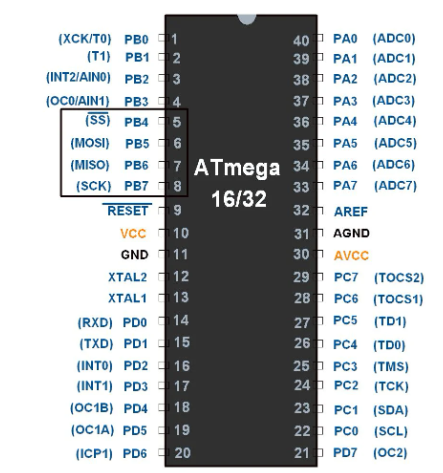
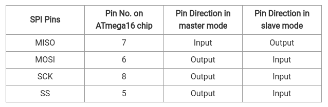
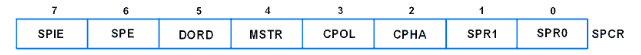
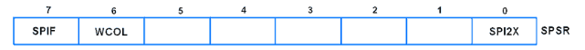
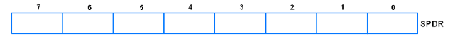
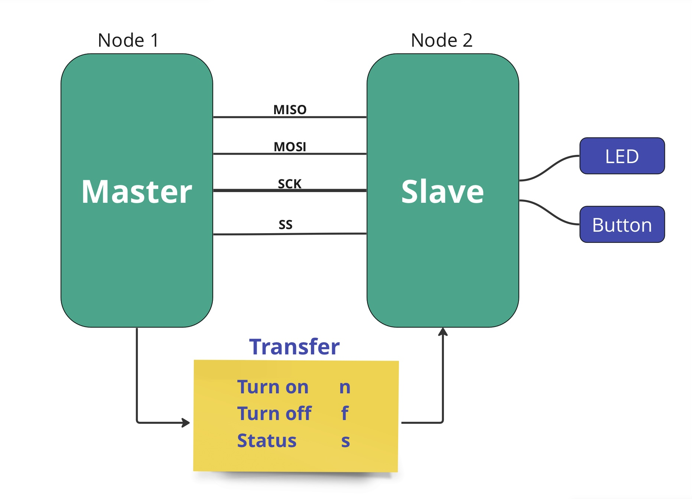

Overview
The primary aim of this documentation is to enable users to develop a slave node that can be controlled by any master node through SPI (Serial Peripheral Interface) communication. This documentation provides a comprehensive guide for configuring a microcontroller as a slave device, allowing external master devices to send commands and manage its functionalities via the SPI protocol.
SPI Overview
Key Features:
- Synchronous Communication.
- Master-Slave Architecture.
- Four Wire Interface: SPI utilizes four main signals for communication:
- MOSI (Master Out Slave In)
- MISO (Master In Slave Out)
- SCK (Serial Clock)
- SS (Slave Select) 
Hardware Requirements
- AVR programmer
- 2 AVR microcontrollers
- LCD display
- Wires
- Resistors
- LEDs
- Dip switch or push-button switch
Software Setup
- Eclipse, CodeBlocks, or any compatible IDE
- AVR library for development
- Proteus simulator (if using simulation)
SPI Configuration in AVR
SPCR: SPI Control Register
- Bit 7 – SPIE: SPI Interrupt Enable bit
- Bit 6 – SPE: SPI Enable bit
- Bit 5 – DORD: Data Order bit
- Bit 4 – MSTR: Master/Slave Select bit
- Bit 3 – CPOL: Clock Polarity Select bit
- Bit 2 – CPHA: Clock Phase Select bit
- Bit 1:0 – SPR1: SPR0 SPI Clock Rate Select bits
SPSR: SPI Status Register
- Bit 7 – SPIF: SPI interrupt flag bit
- Bit 6 – WCOL: Write Collision Flag bit
- Bit 5:1 – Reserved Bits
- Bit 0 – SPI2X: Double SPI Speed bit
SPDR: SPI Data Register
- SPI Data register used to transfer data between the Register file and SPI Shift Register.
- Writing to the SPDR initiates data transmission.
To access the SPI configuration source code, click here.
Interfacing with Peripherals - SPI Communication
Master-Slave Communication Protocol
The master device communicates with the slave device by sending specific letters:
- For Master (sends to Slave):
- n: Turn on LED
- f: Turn off LED
- s: Request status of the switch (pressed or released)
- For Slave (sends to Master):
- p: Indicates the switch is pressed
- r: Indicates the switch is released
source code, click here.
- to be compeleted